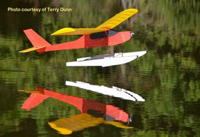
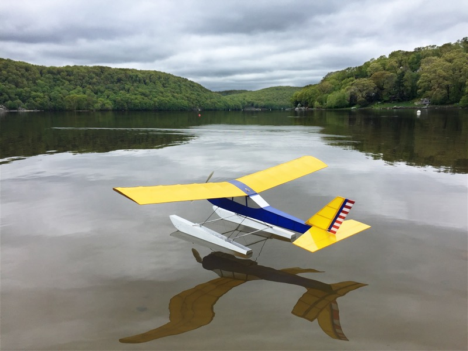

|  | |
|
I was happy to accept the invitation when Carl Hampton offered the transmitter to his Electric Kitten (left) at the 2018 NEAT Fair. The simple lines and stick construction of this Fred Reese design are intriguing, and had already earned a spot on my "someday" list, though to be honest, without much consideration as to when I might get started.
That all changed soon after my first liftoff from, and return to, the NEAT Fair pond. The Electric Kitten's lightweight structure provides great slow speed performance and maneuverability, perfect for that venue. Most of the weekend was warm and calm, and I ended up flying Carl's model for an hour or more, before coming home to start on one of my own. Yeah, I was hooked that fast! | |
| This airframe builds quite quickly. The simple wing has only a few parts, and experienced builders should be able to complete it in a short evening. The fuselage is traditional stick and stringer construction to keep the weight down, and takes just a little longer. The bare airframe of my Electric Kitten weighed just 7 ounces, on floats. The covering, motor and radio gear didn't quite double that number, ensuring a very low wing loading. | |
| Carl's model is powered with a Himax 2812-850 motor, APC 8x6E prop, and a 3S 1000-1800mAh lipo battery. This gives about 100 watts at full power and is a winning combination. I found an unused AXI 2208/34 in my collection, and when paired with an APC 9x6 Slow Fly prop and a 2S 2000mAh lipo battery it gives about the same power as Carl's setup. Another known good setup is the Cobra 2208/34 with the same APC 9x6 SF prop, and 2S batteries as used with the AXI. Those two motors are effectively identical. | |
| Most of my flying with the Kitten is a series of circuits around the pattern, searching for that perfect "pitter-patter" return to the water. Such flying averages just over 2 amps, and I typically changed the packs somewhere between 30 and 45 minutes, just to ensure I don't get stranded off shore. I am now flying with smaller 2S 800-1000 mAh packs. This drops the weight below a pound, and it is that much slower in the air. | |
| The only difference I can discern between Carl's Kitten and mine, is that my model seems to slow down just a bit better. The larger prop offers about 26 percent more disk area, and thus provides more braking action with power off. Some of the effect may also be due to a slightly lower flying weight. Guidance is provided by a Hitec Aurora 9x transmitter, with Minima 6 receiver and two Hitec HS-55 servos. | |
|
No water nearby? No problem! Carl brought his Kitten to Geneseo in July 2019, and I found it every bit as enjoyable on wheels. We used it to aero-tow the now-discontinued, Parkzone UMX ASK-21 sailplane. The AS3X did a great job of stabilizing the sailplane on tow, and the Kitten didn't know it was there. So that's two thumbs up, for wheels and floats.
The Electric Kitten makes a great quick build between more complex projects, and will not break the bank. For those intrigued, the plans are available from the Flying Models plans service, as are laser cut short kits, templates and the February 2001 back issue of Flying Models featuring the original construction article. I have also posted more photos and some building notes here. |  |
|---|---|
|
You can see the Kitten's first few outings by clicking the videos below. Neither have narration or music, though I hope you'll agree that our local Canada Geese provide a pleasing "Springtime in New England" ambiance in the second video.
Full screen viewing is available. | |
|
Maiden Flights
|
Second and Third Outings
|
| Electric Kitten | |
|---|---|
| Specs | |
| Wingspan: | 50 inches |
| Length: | 39 inches |
| Wing Area: | 415 square inches |
| On Floats | |
| Float Spacing: | 12 inches |
| Empty Weight: | 13.7 oz |
| Flying Weight: | 15.8 oz |
| Wing Loading: | 5.48 oz/sq ft |
| Wing Cube Loading: | 3.22 |
| As of August 2020, the Electric Kitten has flown in six states, listed in chronological order. Connecticut, New York, Massachusetts, Pennsylvania, New Hampshire, and Maine. |
|
|
Copyright 2022, Thayer Syme. All rights reserved